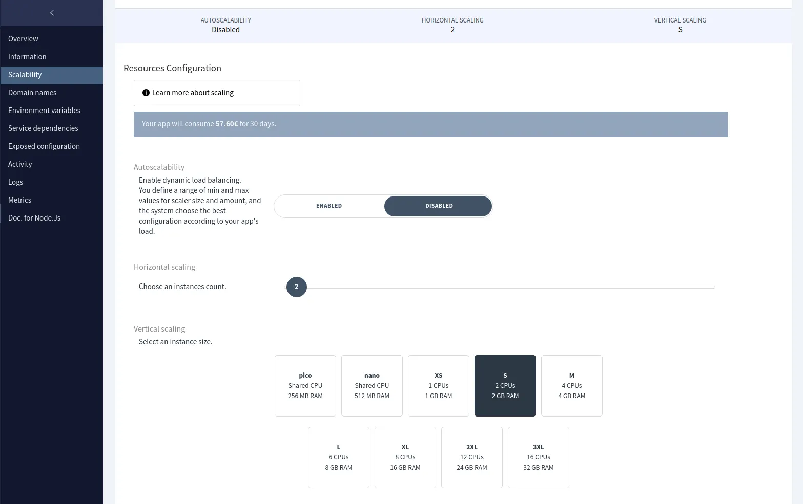
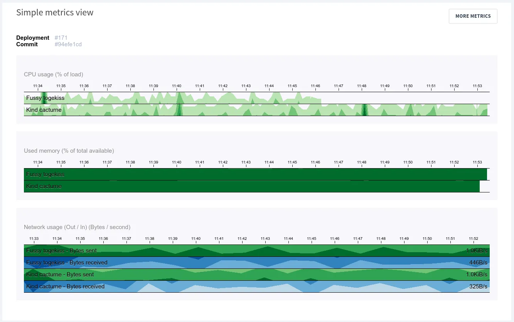
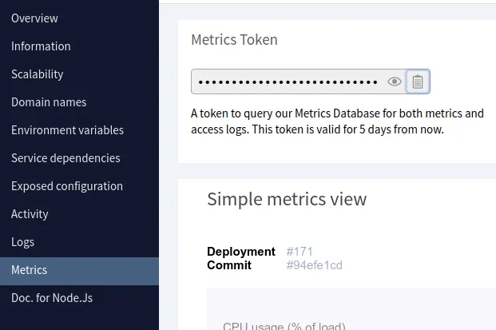
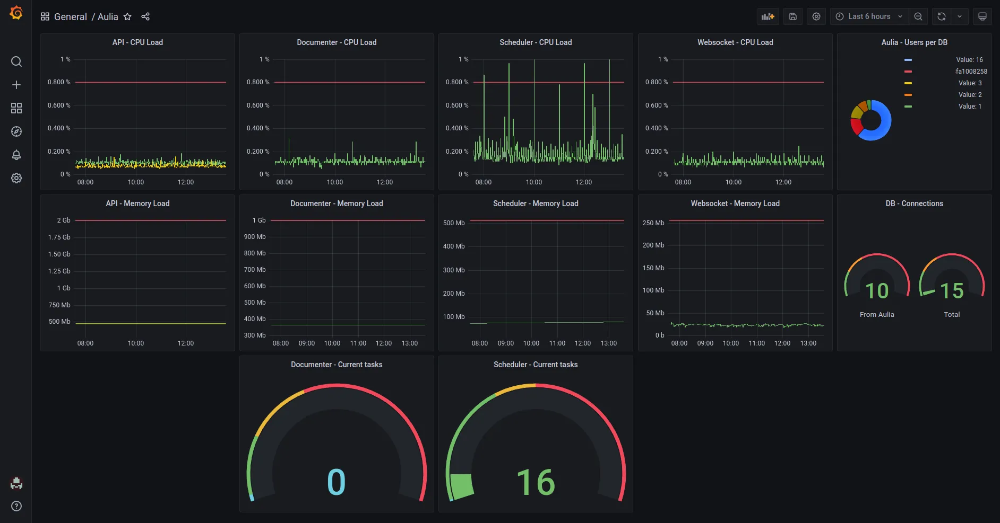

Mis à jour (25/08/21) : Aurélien Hebert, développeur chez CleverCloud, nous a partagé un dépôt Git pour déployer un Grafana directement sur CleverCloud. Nous vous le partageons donc si vous cherchez une autre solution rapide pour avoir un Grafana (disponible ici). Merci beaucoup Aurélien pour le partage ! :)
Dés que vous commencez à avoir une prod et faire des micro-services, un point devient vite essentiel : suivre toute l’activité de chacun de vos services. C’est une chose essentielle : délivrer un produit de qualité signifie aussi suivre sa santé et prévenir d’éventuels problèmes plutôt que de les guérir quand la prod’ est en feu (pensez à OVH pour l’exemple).
Pour notre gros projet d’ERP, nous travaillons avec CleverCloud pour toute la prod’ et la pré-prod’. C’est assez génial : vous créez un projet sur leur web-app, vous poussez votre code sur un dépôt Git, et v’la le code qui est déployé tout seul. Vous avez aussi des possibilités de configuration de build plus avancées, de la scalabilité horizontale et verticale, un load balancer qui se débrouille comme un grand, bref, c’est assez génial pour lancer des projets rapidement sans devoir sécuriser les environnements de prod’ en permanence. Et, en plus, vous n’utilisez pas AWS, ce qui permet de faire perdre de la thune à l’autre mégalomaniaque.
 La scalabilité via CleverCloud Le gros défaut de CleverCloud est que l’interface des métriques restent très limitées. Vous avez l’essentiel, mais dés qu’il s’agit de choses précises ou de voir les métriques de tous vos services, c’est à vous de le mettre en place. C’est un peu relou, surtout quand, comme moi, vous n’êtes pas à la page des solutions intéressantes de monitoring. Pour leur défense, une des personnes du support m’a informé qu’iels étaient en train de travailler sur un Grafana hébergé sur CleverCloud avec l’accès à toutes les métriques de toutes les applications. Ça va être cool, mais, en attendant, on en a monté un de notre côté.
 Les métriques disponibles sur CleverCloud
Étude de l’existant : qui c’est qui sait faire du monitoring ?
La première chose à faire avant de mettre en place une solution, c’est de la trouver. Parmis nos critères, nous avions :
- une solution qui fait du monitoring,
- une solution qui est open-source.
Zabbix
Au travers de ces très nombreux critères, notre première réflexion nous a menée vers Zabbix. Forcément, on a monté un serveur Zabbix, on a ajouté des agents sur diverses machines pour récupérer les métriques des machines, on a fait un dashboard qui affiche ces métriques et des seuils d’alertes.
Le principal problème de Zabbix est que c’est un écosystème à part entière. Même en étant issu d’un cursus universitaire en informatique puis avec quelques années d’expérience derrière moi en tant que développeur, j’étais perdu. Zabbix est une solution qui va vous dire “RTFM” à chaque écran, et si vous n’êtes pas content·e, vous n’avez qu’à contacter le support (évidemment payant, on vend du service maintenant ma bonne dame).
Une fois les configurations passées de certaines machines, nous remarquons un autre problème : il n’y a pas moins d’interconnecter Zabbix avec CleverCloud, car Zabbix ne prend pas en charge les différents options d’export de métriques de CleverCloud (c’est-à-dire Warp10).
Arrivé à ce stade, il était certain que Zabbix n’était pas un bon choix. Après une réinstallation du serveur, nous sommes lancé·es à présent vers notre deuxième choix : Grafana.
Grafana
La stack Grafana est un peu particulière, car là où Zabbix couvrait l’intégralité de la solution de monitoring, Grafana n’est que la partie visuelle du monitoring. Du coup, Grafana utilise des datasources pour récupérer les données et les afficher.
Très généralement, les gens utilisent comme datasource un Prometheus pour stocker des données, puis ensuite les récupérer et les afficher via Grafana. Vous pouvez aussi ajouter d’autres datasources via des plug-ins Grafana, dont notamment, dans notre cas, un plug-in pour Warp10.
Dans les choses intéressantes de Grafana, il y a notamment le fait que vous pouvez faire différents widgets de visualisation et les utiliser sur les tableaux de bord que vous souhaitez, ou mettre des alertes sur différentes métriques importantes pour vous.
Bref, ça semble pas mal, donc on va monter tout ça.
Mise en place de la stack Grafana
Comme tout bon développeur·euse, j’ai la flemme. Surtout que ce n’est pas si simple de comprendre, au début, que Grafana peut être monté sans Prometheus, mais que c’est pas mal de l’avoir, puis aussi vaut mieux avoir AlertManager.
Bref, si vous voulez avoir un truc qui marche rapidement, un développeur nommé [vegasbrianc] a préparé un petit dépôt Git avec tout le nécessaire de base pour monter la stack de vos rêves rapidement. Tout est disponible ici.
Les prérequis sont Docker, Docker Compose et Docker Swarm (normalement installé avec Docker).
Et vérifiez que docker est lancé correctement. Si vous êtes sur un Linux et que ça ne marche pas, vous avez dû oublié ces étapes de post-installation.
Cloner le dépôt
git clone https://github.com/vegasbrianc/prometheus
Modifier le mot de passe par défaut et ajouter le plug-in Warp10
Modifiez le fichier <git_repo_root>/grafana/config.monitoring avec les informations suivantes :
GF_SECURITY_ADMIN_PASSWORD=monsupermotdepasse→ choisissez votre mot de passe du compte admin en mettant quelque chose de solide.GF_USERS_ALLOW_SIGN_UP=false→ si vous ne voulez pas que des personnes puissent créer des comptes utilisateurs en s’inscrivant sur votre Grafana.GF_INSTALL_PLUGINS=ovh-warp10-datasource→ pour ajouter le plug-in Warp10 à Grafana.
Démarrer la stack
HOSTNAME=$(hostname) docker stack deploy -c docker-stack.yml prom
Vérifier que tout fonctionne
Si tout a fonctionné correctement, vous devriez avoir un Grafana à l’adresse http://<Host IP Address>:3000.
Vous pouvez vous y connecter avec l’utilisateur admin et le mot de passe que vous avez choisi précédemment.
Une fois que tout marche et que vous êtes connectés à votre Grafana, il y a quelques étapes supplémentaires pour sécuriser votre serveur Grafana (notamment si vous voulez l’utilisez en production).
Optionnel - Sécuriser la stack
Supprimer les accès extérieurs à Prometheus et Alertmanager
Modifiez le fichier <git_repo_root>/docker-compose.yml en supprimant les ports des services prometheus et alertmanager.
À l’heure où ces lignes sont écrites, il s’agit des lignes - 9090:9090 et - 9093:9093.
Ajouter le HTTPS
Last but not least, vous pouvez ajouter le HTTPS à votre Grafana pour éviter des MitM et autres cyber-joyeusetés.
La documentation propose d’utiliser nginx-proxy, mais vu que les containers Docker tournent avec Swarm, je n’ai pas réussi à faire fonctionner ce dernier (car nginx-proxy n’arrive pas à redémarrer les containers et mettre à jour leurs configuratons).
Du coup, j’ai juste monté un nginx en amont avec la configuration suivante :
upstream grafana {
server 127.0.0.1:3000;
}
server {
listen 80;
listen [::]:80;
server_name mondomaine.org;
return 302 https://$server_name$request_uri;
}
server {
listen 443 ssl;
listen [::]:443 ssl;
ssl_certificate /etc/ssl/cert.pem;
ssl_certificate_key /etc/ssl/key.pem;
server_name mondomaine.org;
access_log /var/log/nginx/reverse-access.log;
error_log /var/log/nginx/reverse-error.log;
location / {
proxy_pass http://grafana;
}
}
Vous pouvez mettre uniquement la configuration HTTP (80) de base puis mettre un coup de certbot, ça marche aussi bien.
Note : si jamais vous remarquez que votre Grafana perd de temps en temps des paquets avec 60s de timeout, c’est probablement que vous avez écrit un truc du type :
upstream grafana {
server localhost:3000;
}
… et que vous tombez dans le cas de ce bug très étrange. Il vous suffit alors de remplacer localhost par 127.0.0.1.
Utiliser Grafana avec CleverCloud
Ajouter la datasource
Pour ajouter l’une de vos applications CleverCloud à Grafana, il vous suffit de créer une nouvelle datasource en Warp10, et de renseigner les informations suivantes :
- HTTP Address - URL :
https://c1-warp10-clevercloud-customers.services.clever-cloud.com/ - Add a constant : Name :
token- Value : récupérer le token d’authentification dans la vueMetricssur CleverCloud >Metrics Token, collez-le dans Value, puis appuyez sur le boutonAdd.
Vous pouvez alors sauvegarder votre datasource.
Créer un widget
- Créez un nouveau tableau de bord sur Grafana, puis créez un nouveau widget.
- Sélectionnez votre Warp10 en datasource.
- Fetch Data - Read token :
$token→ cela va utiliser la variable que vous avez défini dans la définition de votredatasource. - Fetch Data - Metric name :
cpu.usage_user→ la liste des métriques est disponible ici. - Labels - Key :
cpu- Value :cpu-total→ ce label est nécessaire dans le cadre d’une requête sur cette métrique. - Labels - Key :
app_id- Value : <votre_app_id> → sur CleverCloud, sélectionnez votre application, et récupérez le contenu du champ en haut à droite).
 Le token de Metrics Le seul bémol de cette solution est que le token disponible sur la page des Metrics de CleverCloud est valable 5 jours. Vous pouvez récupérer un token de 30 jours via un appel à l’API, mais il faudra tout de même le mettre à jour à intervalle régulier. CleverCloud prévoit de corriger ce problème avec l’arrivée de Grafana sur leur plate-forme.
Dans la partie à droite de la création d’un widget Grafana, vous pouvez modifier le style de widget, changez les échelles, mettre des seuils, etc.
Vous pouvez aussi aller dans l’onglet Transform pour appliquer des transformations à vos jeux de données pour obtenir le résultat que vous souhaitez.
Une fois ceci fait, vous pouvez appuyer sur Save en haut à droite, et si tout est bien configuré, vous obtiendrez un petit graphique de l’état de votre CPU sur votre application. Si vous avez 2 machines sur votre application, vous arez 2 courbes.
En jouant un peu avec Grafana, nous sommes parvenus à ce résultat :
 Le premeir dashboard de monitoring Vous pouvez aussi vous servir de Grafana pour rajouter des métriques sur vos DBs, sur vos applications, ou même faire des tableaux de bord orientés business ou marketing via les plug-ins Google Sheets.
Et Grafana possède un Cycle view mode permettant l’affichage uniquement du dashboard, ce qui peut être utilisé pour faire des écrans de contrôle à destination des équipes de développement ou autre.
Merci de nous avoir lu ! Nous espérons que vous parviendrez à faire des choses incroyables avec Grafana ! Bon été ! :)
Merci de votre lecture ! <3